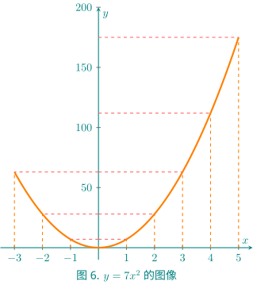
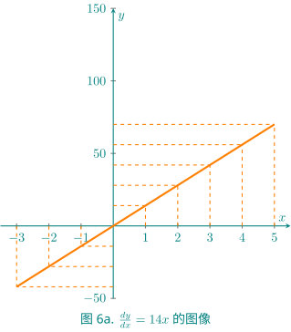

5.如何处理常数
在前面章节讲解的方程中，我们假设变量 \(x\) 会发生变化。由于 \(x\) 的变化，\(y\) 的值也随之改变并“增长”。
我们通常把 \(x\) 看作一个可以主动调节的量；将 \(x\) 的变化视作一种原因，那么 \(y\) 的相应变化就是结果。换句话说，我们认为 \(y\) 的值依赖于 \(x\)。
虽然 \(x\) 和 \(y\) 都是变量，但 \(x\) 是我们主动改变的那个，而 \(y\) 则是因变量。在前面的章节中，我们一直在探索：当 \(x\) 独立发生变化时，对应的 \(y\) 会如何变化，以及两者变化之间的比例关系。
接下来，我们要研究的是：当函数中出现常数——也就是那些在 \(x\) 或 \(y\) 变化时始终保持不变的数值——会对求导过程产生什么影响。
加法中的常数
我们先从一个简单的例子开始，比如：
设
和之前一样，假设 \(x\) 增加了微小的量 \(dx\)，于是 \(y\) 也相应地增加到 \(y + dy\)。
那么：
忽略更高阶的无穷小项后，上式简化为：
再减去原来的 \(y = x^3 + 5\)，就得到：
可以看到，常数 \(5\) 完全消失了。它对 \(x\) 的增长毫无贡献，自然也不会出现在导数中。如果我们把 \(5\) 换成 \(7\)、\(700\)，或者任何其他数字，结果也一样会消失。因此，无论用字母 \(a\)、\(b\) 还是 \(c\) 来表示任意常数，在求导时它们都会直接消失。
即使这个常数是负数，比如 \(-5\) 或 \(-b\)，结果也是一样，它仍然会被消去。
乘法中的常数
我们还是通过一个简单的例子来说明：
设 $ y = 7x^2 $。
按照之前的步骤，我们有：
减去原来的 $ y = 7x^2 $，并忽略高阶无穷小项，得到：
为了更直观地理解，我们来画出函数 $ y = 7x^2 $ 和它的导数 $ \frac{dy}{dx} = 14x $ 的图像。给 $ x $ 取一组连续的值：0、1、2、3……然后算出对应的 $ y $ 和 $ \frac{dy}{dx} $ 的值，并整理成下表：
| \(x\) | 0 | 1 | 2 | 3 | 4 | 5 | -1 | -2 | -3 |
|---|---|---|---|---|---|---|---|---|---|
| \(y\) | 0 | 7 | 28 | 63 | 112 | 175 | 7 | 28 | 63 |
| \(\frac{dy}{dx}\) | 0 | 14 | 28 | 42 | 56 | 70 | -14 | -28 | -42 |

将这些点按适当比例画在坐标系中，就得到了两条曲线，如图6和图6a所示。

仔细对比这两幅图，你会发现：导函数曲线（图6a）上每个点的纵坐标，正好与原函数曲线（图6）在对应 $ x $ 处的“斜率”成正比。在原点左侧，原函数曲线是向下倾斜的（从左往右下降），因此导函数对应的纵坐标都是负值。
回忆一下第4章讲的幂法则，我们会发现：对 $ x^2 $ 求导得到的是
而 $ 7x^2 $ 的导数正好是 $ x^2 $ 导数的 7 倍。如果函数取的是 $ 8x^2 \(，那么它的导数就是 \) x^2 $ 导数的 8 倍。一般地，
设
那么导数就是：
更一般地说，
如果
那么求导后就是
这说明，函数中的任何常数倍数，在求导后依然作为一个常数倍数保留下来。
同样的规律也适用于除法。比如上面的例子中，如果我们把常数 7 换成 $ \frac{1}{7} $，也就是
那么求导后，这个 $ \frac{1}{7} $ 依然会保留在结果中。